ՆԱԽԱԶԳՈՒՇԱՑՆՈՂ ԱԶԴԱՆՇԱՆՆԵՐ, ՀԱՏՈՒԿ ԱԶԴԱՆՇԱՆՆԵՐ, ՎԱԶԱՆՑ:
1. Կարմիր գույնի առկայծող փարոսիկ միացրած, կանգնած վիճակում գտնվող տրանսպորտային միջոցին մոտենալիս` տվյալ ուղղությամբ երթևեկող ընդհանուր օգտագործման տրանսպորտային միջոցների վարորդները պետք է`
2. Կապույտ գույնի առկայծող փարոսիկ և հատուկ ձայնային ազդանշան միացրած տրանսպորտային միջոց մոտենալու դեպքում ընդհանուր օգտագործման տրանսպորտային միջոցների վարորդները պետք է՝
3. Ընդհանուր օգտագործման տրանսպորտային միջոցների վարորդների կողմից ձայնային ազդանշանները կարող են կիրառվել`
4. Օրվա մութ ժամանակ ճանապարհի չլուսավորված հատվածներում սահմանված երթուղով երթևեկող ավտոբուսի վրա պետք է միացված լինի՝
5. Պարտադի՞ր է արդյոք օրվա լուսավոր ժամերին լապտերների մոտակա լույսը միացված լինի հատուկ առանձնացված գոտիով, հիմնական հոսքին հանդիպակաց երթևեկող ընդհանուր օգտագործման տրանսպորտային միջոցների վրա։
6. Ո՞ր դեպքում կանոնները չեն պարտադրում տալ նախազգուշացնող ազդանշան։
7. Վերադասավորումից առաջ նախազգուշացնող ազդանշանը պետք է տրվի՝
8. Մանևրը կատարելուց առաջ նախազգուշացնող ազդանշանը պետք է տրվի՝
9. Վարորդի կողմից ձեռքով տրվող նախազգուշացնող ազդանշանը դադարեցվում է`
10. Ո՞ր դեպքում վարորդը պետք է տա նախազգուշացնող ազդանշան՝ կանգառ կատարելուց առաջ։
11. Ձայնային ազդանշանների կրկնողությամբ ընդհանուր տագնապի ինչպիսի՞ ազդանշան է վարորդը պարտավոր տալ երկաթուղային գծանցի վրա հարկադրական կանգառ կատարելու դեպքում։
12. Շրջադարձի լուսային ցուցիչի բացակայության կամ անսարքության դեպքում ձեռքով տրվող նախազգուշացնող ազդանշանը դադարեցվում է՝
13. Երկաթուղային գծանցի վրա տրվող ընդհանուր տագնապի ազդանշան է հանդիսանում ձայնային ազդանշանների հետևյալ համակցությունը՝
14. Ո՞ր նկարում է վարորդը տալիս ձախ շրջադարձի ազդանշան։
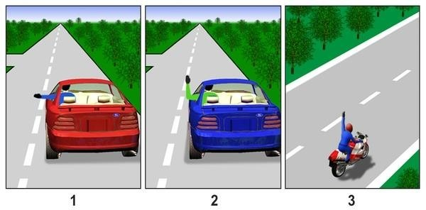
15. Կարմիր գույնի առկայծող փարոսիկ միացրած, կանգնած վիճակում գտնվող տրանսպորտային միջոցին մոտենալիս` տվյալ ուղղությամբ երթևեկող տրանսպորտային միջոցների վարորդները պետք է`
16. Տրանսպորտային միջոցների վրա ի՞նչ նպատակով են տեղադրված նարնջագույն կամ դեղին գույնի առկայծող փարոսիկներ։
17. Կապույտ գույնի առկայծող փարոսիկ և հատուկ ձայնային ազդանշան միացրած տրանսպորտային միջոց մոտենալու դեպքում վարորդները պետք է՝
18. Կապույտ ավտոմոբիլը խաչմերուկը կանցնի՝
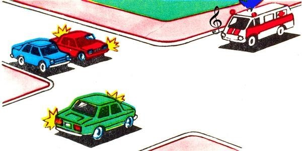
19. Կապույտ և կարմիր գույների առկայծող փարոսիկներ և հատուկ ձայնային ազդանշան միացրած տրանսպորտային միջոց մոտենալու դեպքում վարորդները պետք է՝
20. Ո՞ր տրանսպորտային միջոցի վարորդն ունի առաջնահերթ երթևեկության իրավունք։
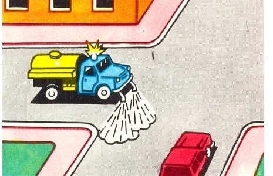
21. Սև ավտոմոբիլը խաչմերուկը կանցնի՝
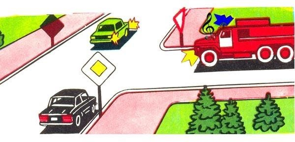
22. Ո՞ր տրանսպորտային միջոցի վարորդը պետք է զիջի ճանապարհը։
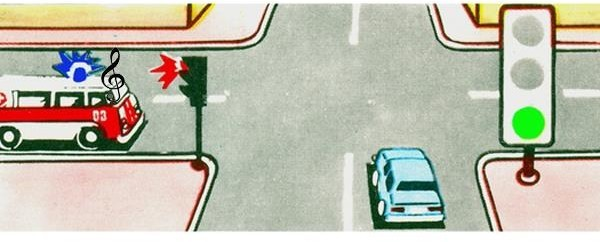
23. Կապույտ ավտոմոբիլը խաչմերուկը կանցնի՝
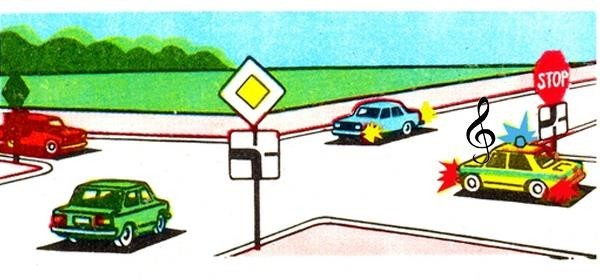
24. Տալի՞ս է արդյոք երթևեկության առավելություն տրանսպորտային միջոցի վրա միացված դեղին գույնի (նարնջագույն) առկայծող փարոսիկը։
25. Լուսնասպիտակ գույնի առկայծող փարոսիկները միացրած տրանսպորտային միջոցի վարորդը տալիս է հատուկ ձայնային ազդանշան, որպեսզի՝
26. Կապույտ գույնի առկայծող փարոսիկով կահավորված տրանսպորտային միջոցի վարորդը երթևեկության մյուս մասնակիցների նկատմամբ առավելություն ունի, եթե՝
27. Ի՞նչ տարածության վրա է արգելվում վազանցը մինչև երկաթուղային գծանցը։
28. Թույլատրվու՞մ է արդյոք խաչմերուկում կատարել տրանսպորտային միջոցների վազանց` հատվողի նկատմամբ գլխավոր համարվող ճանապարհի վրա։
29. Թույլատրվու՞մ է արդյոք թեթև մարդատար ավտոմոբիլի վարորդին վազանց կատարել նշված իրադրությունում։
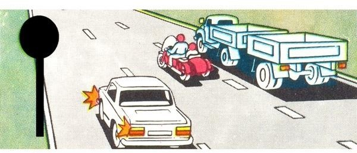
30. Վազանցն արգելվում է՝
31. Վազանցն արգելվում է՝
32. Թույլատրվու՞մ է արդյոք վազանցել ավտոգնացքը տվյալ իրադրությունում, եթե դրա արագությունը չի գերազանցում 30 կմ/ժ։
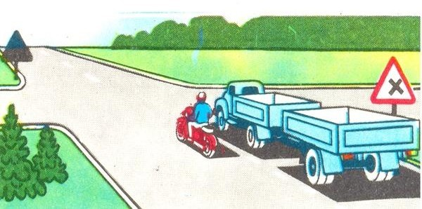
33. Թույլատրվու՞մ է արդյոք կանաչ ավտոմոբիլի վարորդին վազանց կատարել։
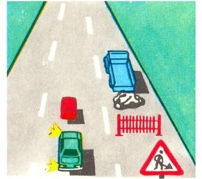
34. Թույլատրվու՞մ է արդյոք կարմիր ավտոմոբիլի վարորդին վազանց կատարել տվյալ իրադրությունում։
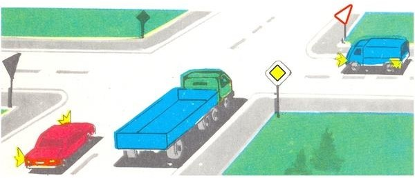
35. Թույլատրվու՞մ է արդյոք նշված տեղում վազանցել ավտոբուսը։
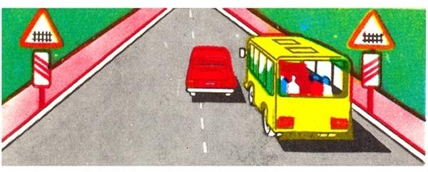
36. Տրանսպորտային միջոցների վազանց նշանակում է՝
37. Օրվա մութ ժամանակ և անբավարար տեսանելիության պայմաններում` անկախ ճանապարհի լուսավորվածությունից, երթևեկող մեխանիկական տրանսպորտային միջոցների վրա պետք է միացված լինեն`
38. Ո՞ր դեպքում օրվա լուսավոր ժամանակ մոտոցիկլի վրա պետք է միացված լինի լապտերների մոտակա լույսը։
39. Առաջնահերթ ի՞նչ պետք է ձեռնարկի վարորդը հանդիպակաց երթևեկող տրանսպորտային միջոցի լապտերների լույսից շլանալու դեպքում։
40. Ձայնային ազդանշանները կարող են կիրառվել միայն՝
41. Օրվա մութ ժամանակ ճանապարհի չլուսավորված հատվածներում երթևեկող մեխանիկական տրանսպորտային միջոցի վրա պետք է միացված լինի՝
42. Հետին հակամառախուղային լապտերիկները կարող են օգտագործվել՝
43. Հանդիպակաց երթևեկող տրանսպորտային միջոցից ի՞նչ հեռավորության վրա լապտերների հեռահար լույսը պետք է փոխարկվի մոտակայի։
44. Լապտեր-լուսարձակ թույլատրվում է օգտագործել՝
45. Այս նախազգուշացնող նշանը բնակավայրերում, մինչև վտանգավոր հատվածի սկիզբը ի՞նչ հեռավորության վրա է տեղադրվում։
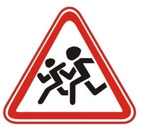
46. Թույլատրվու՞մ է արդյոք երկաթուղային գծանցով փոխադրել գյուղատնտեսական, ճանապարհային, շինարարական և այլ մեքենաներ ու մեխանիզմներ։
47. Որտե՞ղ է թույլատրվում հատել երկաթուղային գծերը։
48. Թույլատրվու՞մ է արդյոք ծառայողական առաջադրանք կատարելիս ինքնակամ բացել կամ շրջանցել ուղեփակոցը։
49. Թույլատրվու՞մ է արդյոք երկաթուղայհն գծանցով փոխադրել գյուղատնտեսական, ճանապարհային, շինարարական և այլ մեքենաներ ու մեխանիզմներ:
50. Ինչո՞վ պետք է ղեկավարվի վարորդը երկաթուղային գծանցին մոտենալիս։
51. Թույլատրվու՞մ է արդյոք հետիոտներին տեղաշարժվել «Ավտոմայրուղի» նշանով կահավորված ճանապարհով։
52. Տրանսպորտային միջոցներով, որոնց արագությունը տեխնիկական բնութագրերից կամ վիճակից ելնելով չի գերազանցում 40 կմ/ժ, ավտոմայրուղիներով երթևեկել
53. Տրանսպորտային միջոցի վրա վթարային լուսային ազդանշանը պետք է միացված լինի՝
54. Տրանսպորտային միջոցի վրա վթարային լուսային ազդանշանը պետք է միացված լինի՝
55. Տրանսպորտային միջոցից ի՞նչ հեռավորության վրա է տեղադրվում «Վթարային կանգառ» նշանը:
56. Տրանսպորտային միջոցի վրա վթարային լուսային ազդանշանը պետք է միացված լինի՝
57. Կառուցապատված տարածքներում, որտեղ մուտք ու ելքը նշված են «Բնակելի գոտի» և «Բնակելի գոտու վերջ» ճանապարհային նշաններով, չի արգելվում`
58. Խաչմերուկը համարվում է կարգավորվող, եթե երթևեկության հերթականությունը որոշվում է`
59. Առանց ծածկույթի հողային ճանապարհի վրա, անմիջապես խաչմերուկից առաջ, ծածկույթով հատվածի առկայությունն արդյոք այդ ճանապարհը դարձնու՞մ է հատվողին հավասարազոր։
60. Ո՞ր նկարում են պատկերված երթևեկության թույլատրելի ուղղությունները։
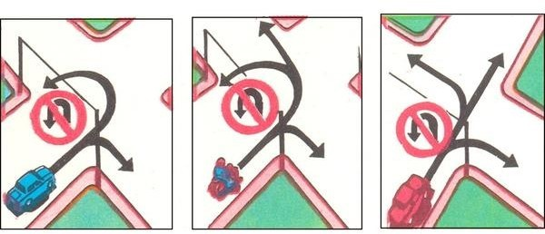
61. Եթե լուսացույցի ազդանշանների նշանակությունները հակասում են առավելության նշանների պահանջներին, ապա վարորդները պետք է ղեկավարվեն՝
62. Թույլատրվու՞մ է արդյոք վարորդին շարունակել երթևեկությունը լուսացույցի դեղին ազդանշանը միանալու կամ կարգավորողը ձեռքը բարձրացնելու դեպքում։
63. Կարգավորողն ազդանշան տալիս է սուլիչով՝
64. Թույլատրվու՞մ է արդյոք տվյալ իրադրությունում ավտոգնացքին անցնել կամուրջի վրայով։
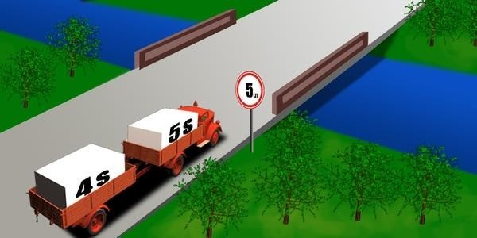
65. Ո՞ր դեպքում կանոնները չեն պարտադրում ավտոբուսի վարորդին տալ նախազգուշացնող ազդանշան։
66. Վերադասավորումից առաջ ավտոբուսի վարորդը նախազգուշացնող ազդանշան պետք է տա՝
67. Ձայնային ազդանշանների կրկնողությամբ ընդհանուր տագնապի ինչպիսի՞ ազդանշան է ավտոբուսի վարորդը պարտավոր տալ երկաթուղային գծանցի վրա հարկադրական կանգառ կատարելու դեպքում։
68. Միջքաղաքային ավտոբուսի վարորդն իրավունք ունի՞ վազանցելու մոտոցիկլին, որը երթևեկում է 70 կմ/ժ արագությամբ։
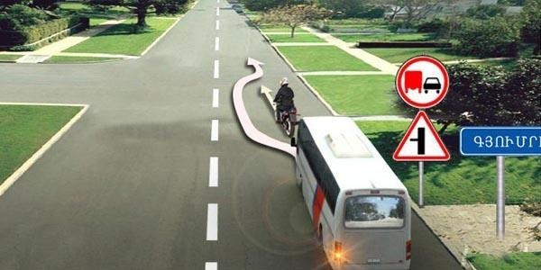
69. Կարելի՞ է նշված հետագծով երթևեկելու համար ձեռքով տալ նախազգուշացնող ազդանշան։

70. Պարտավո՞ր է վարորդը միացնել շրջադարձի ցուցիչը` բնակելի գոտում երթևեկությունը սկսելուց առաջ։
71. Պարեկային ծառայության ավտոմոբիլի վարորդը երթևեկության այլ մասնակիցների նկատմամբ առավելություն ստանալու համար պետք է միացնի`
72. Պարտավո՞ր է ավտոբուսի վարորդը ճանապարհը զիջել «Շտապ օգնության» ավտոմոբիլին, եթե միացրած չեն կապույտ գույնի առկայծող փարոսիկը և հատուկ ձայնային ազդանշանը։
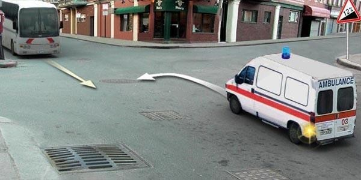
73. Վազանցն արգելվում է`
74. Ինչի՞ մասին է տեղեկացնում թեթև մարդատար ավտոմոբիլի վարորդի կողմից ձեռքով տրված ազդանշանը։
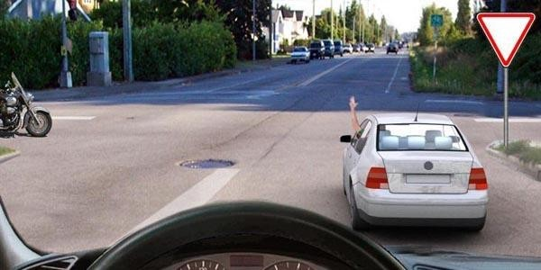
75. Վթարային լուսային ազդանշանը միացվում է`
76. Ինչի՞ մասին է տեղեկացնում մոտոցիկլի վարորդի կողմից ձեռքով տրված ազդանշանը։
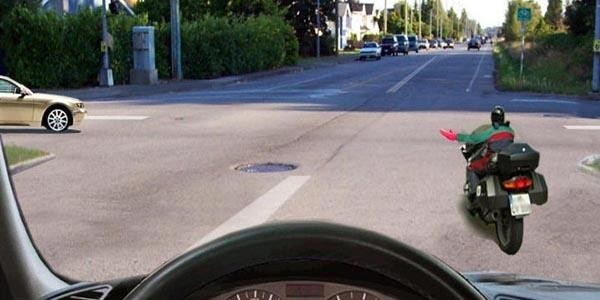
77. Ինչի՞ մասին է տեղեկացնում թեթև մարդատար ավտոմոբիլի վարորդի կողմից ձեռքով տրված ազդանշանը։
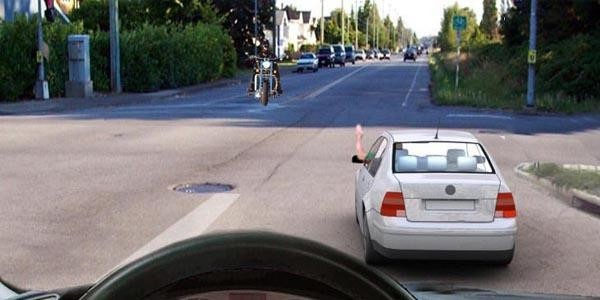
78. Ինչի՞ մասին է տեղեկացնում թեթև մարդատար ավտոմոբիլի վարորդի կողմից ձեռքով տրված ազդանշանը։
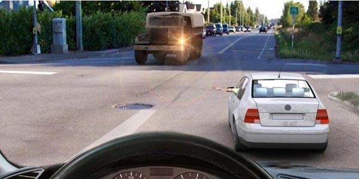
79. Պարտավո՞ր է արդյոք վարորդը միացնել շրջադարձի ցուցիչը տվյալ դեպքում։
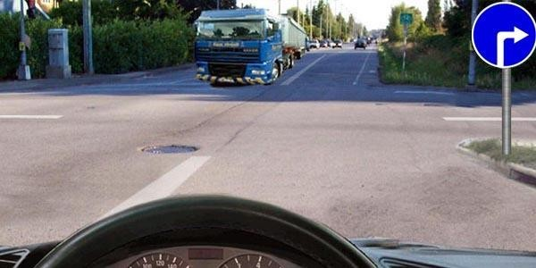
80. Օրվա լուսավոր ժամերին երեխաների կազմակերպված խմբեր տեղափոխելու ժամանակ պետք է միացված լինեն ավտոբուսի`
81. Թույլատրվու՞մ է բեռնատար ավտոմոբիլի վարորդին վազանցել ավտոբուսին, որը երթևեկում է 60 կմ/ժ արագությամբ։
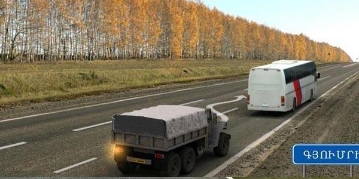
82. Թույլատրվու՞մ է վազանց կատարել տվյալ իրավիճակում։
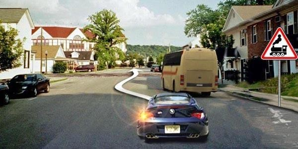
83. Թույլատրվու՞մ է արդյոք մուտք գործել երկաթուղային գծանց տվյալ իրավիճակում։
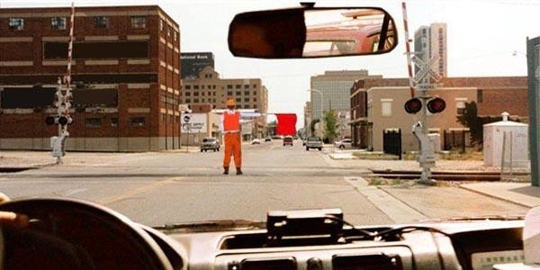
84. Թույլատրվու՞մ է արդյոք մուտք գործել երկաթուղային գծանց տվյալ իրավիճակում։
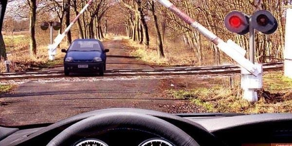
85. Ինչպե՞ս պետք է գործել տվյալ իրադրությունում։
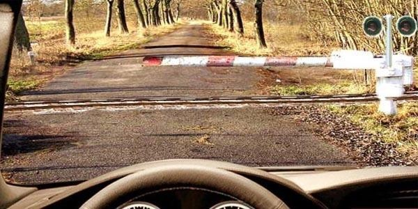
86. Տվյալ իրավիճակում թույլատրվու՞մ է անցնել երկաթուղային գծանցը։
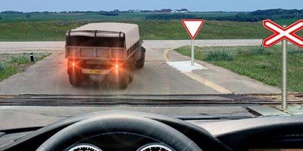
87. Տվյալ իրավիճակում թույլատրվու՞մ է անցնել երկաթուղային գծանցը։
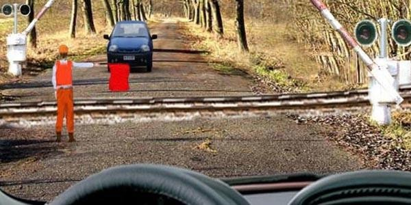
88. Տվյալ իրավիճակում որտե՞ղ կարելի է սկսել վազանցը։
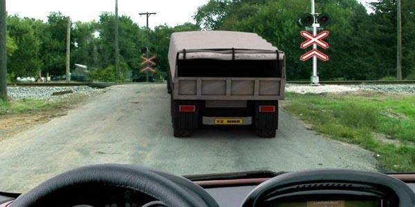
89. Տվյալ իրավիճակում թույլատրվու՞մ է վազանց կատարել։
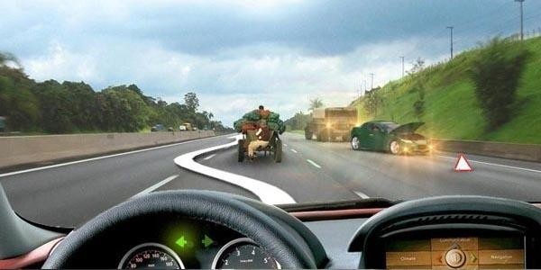
90. Ի՞նչ մանևր է կատարում թեթև մարդատարի վարորդը
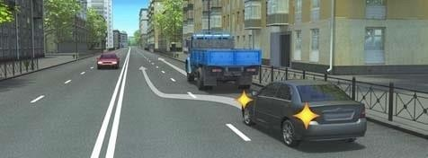
91. Թույլատրվում է արդյո՞ք վազանցել մոտոցիկլին
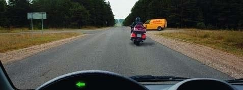
92. Ո՞ր դեպքում է թույլատրվում հանդիպակաց երթևեկության գոտով վազանց կատարել յուրաքանչյուր ուղղությամբ մեկ գոտի ունեցող ճանապարհներին
93. Թույլատրվում է արդյո՞ք վազանց կատարել նշված իրավիճակում:
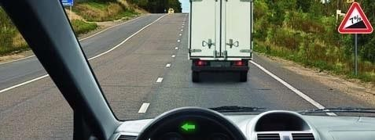
94. Թույլատրվո՞ւմ է վազանցել բեռնատարին:
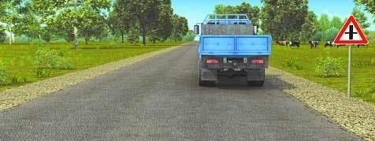
95. Ի՞նչ է պահանջվում վազանցվող տրանսպորտային միջոցի վարորդից
96. Թույլատրվո՞ւմ է այս իրավիճակում վազանց կատարել
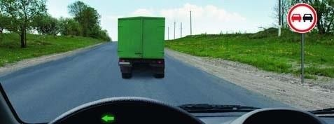
97. Թույլատրվո՞ւմ է բեռնատարի վարորդին վազանցել տրակտորին, եթե թույլատրելի առավելագույն զանգվածը 3 տոննա է:
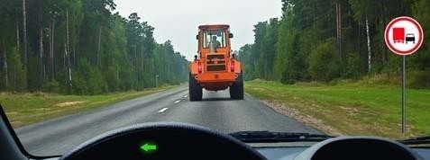
98. Եթե հանդիպակաց երթևեկությունը դժվար է այս իրավիճակում, ապա ճանապարհը պետք է զիջի
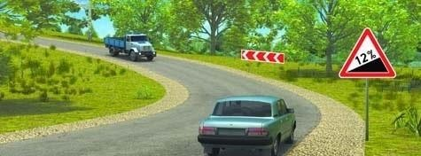
99. Հետիոտնային անցման վրա վազանցն
100. Ո՞ր հետագծով է թույլատրվում վազանց կատարել
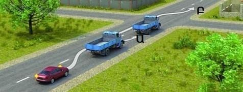
101. Ի՞նչ է ցույց տալիս ճանապարհային նշանը
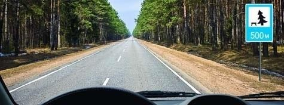
102. Վարորդը միացնել շրջադարձի լուսային ցուցիչն այս իրավիճակում
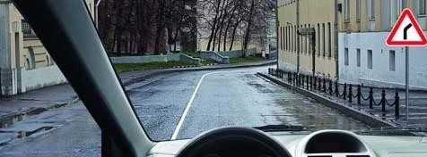
103. Վարորդի դեպի վեր պարզած ձեռքով տեղեկացնում է
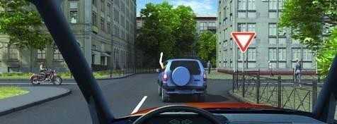
104. Ազդանշան տալը երթևեկության մյուս մասնակիցների նկատմամբ առավելություն
105. Ի՞նչի մասին է տեղեկացնում մոտոցիկլի վարորդը
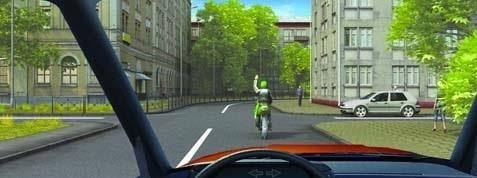
106. Ձախ շրջադարձ կատարելիս այս իրավիճակում ազդանշան տալը
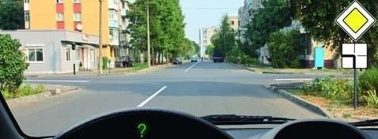
107. Վազանց կատարելիս ձախ շրջադարձի լուսային ցուցիչը անջատել պարտավոր ենք
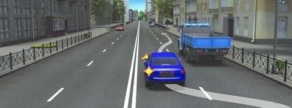
108. Հետադարձն այս խաչմերուկում կատարելիս ո՞ր շրջադարձի ցուցիչը պետք է միացնենք
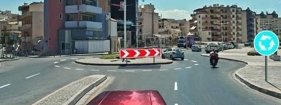
109. Պարտավոր եք արդյո՞ք նշված իրադրությունում տալ ազդանշան լուսային ցուցիչով
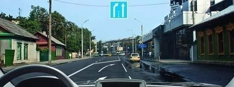
110. Ի՞նչի մասին է տեղեկացնում մոտոցիկլի վարորդը
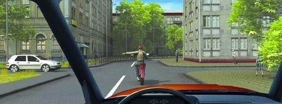
111. Լուսային ցուցիչով տրված մանևրի մասին ազդանշանը պետք է դադարեցվի
112. Լուսային ցուցիչով ազդանշան տալ նշված իրավիճակում
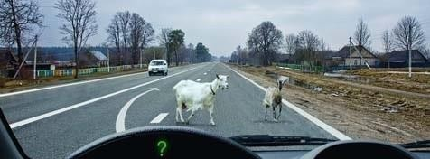
113. Ո՞ր վարորդն է աջ շրջադարձի ազդանշան տալիս
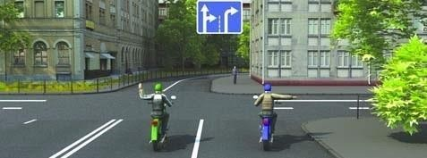
114. Կայանատեղիներում կամ ավտոլցակայաններում մանևրելիս ազդանշան տալ լուսային ցուցիչով
115. Այս իրավիճակում ի՞նչ կարող է նշանակել վարորդի դուրս պարզած ձեռքը
116. Ի՞նչ ազդանշաններ պետք է տաք նշված հետագծով հետադարձը կատարելիս
117. Եթե անմիջապես խաչմերուկից հետո մտադրվել եք կանգառ կատարել երթևեկության մասնակիցներին շփոթության մեջ չգցելու նպատակով, երբ պետք է միացնեք աջ շրջադարձի լուսային ցուցիչը
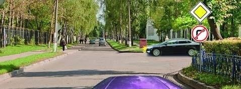